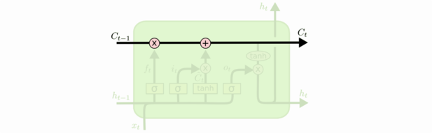

The Core Idea Behind LSTMs
The key to LSTMs is the cell state, the horizontal line running through the top of the diagram. The cell state is kind of like a conveyor belt. It runs straight down the entire chain, with only some minor linear interactions. It’s very easy for information to just flow along it unchanged.

The LSTM does have the ability to remove or add information to the cell state, carefully regulated by structures called gates. Gates are a way to optionally let information through. They are composed out of a sigmoid neural net layer and a pointwise multiplication operation.

This sigmoid layer outputs numbers between zero and one, describing how much of each component should be let through. A value of zero means “let nothing through,” while a value of one means “let everything through!” This works on the principle that multiplication by 1 yields the same number, by 0 yields zero, and every number in between by a product in between. An LSTM has three of these gates, to protect and control the cell state.
The Core Idea Behind LSTMs The key to LSTMs is the cell state, the horizontal line running through the top of the diagram. The cell state is kind of like a conveyor belt. It runs straight down the entire chain, with only some minor linear interactions. It’s very easy for information to just flow along it unchanged.
The LSTM does have the ability to remove or add information to the cell state, carefully regulated by structures called gates. Gates are a way to optionally let information through. They are composed out of a sigmoid neural net layer and a pointwise multiplication operation.
This sigmoid layer outputs numbers between zero and one, describing how much of each component should be let through. A value of zero means “let nothing through,” while a value of one means “let everything through!” This works on the principle that multiplication by 1 yields the same number, by 0 yields zero, and every number in between by a product in between. An LSTM has three of these gates, to protect and control the cell state.